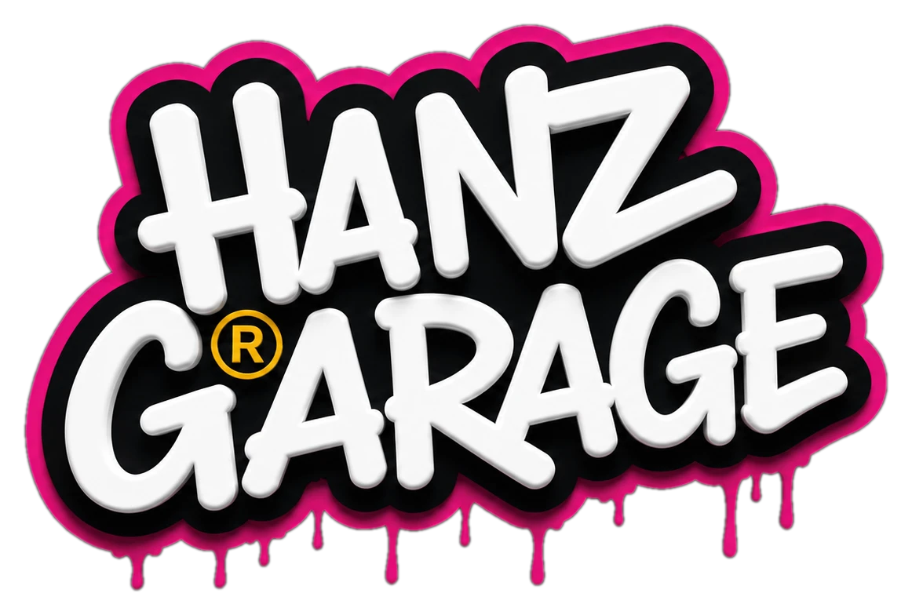
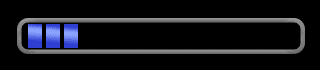
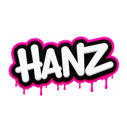
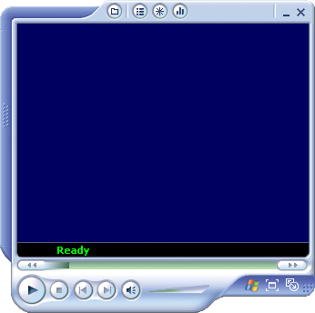
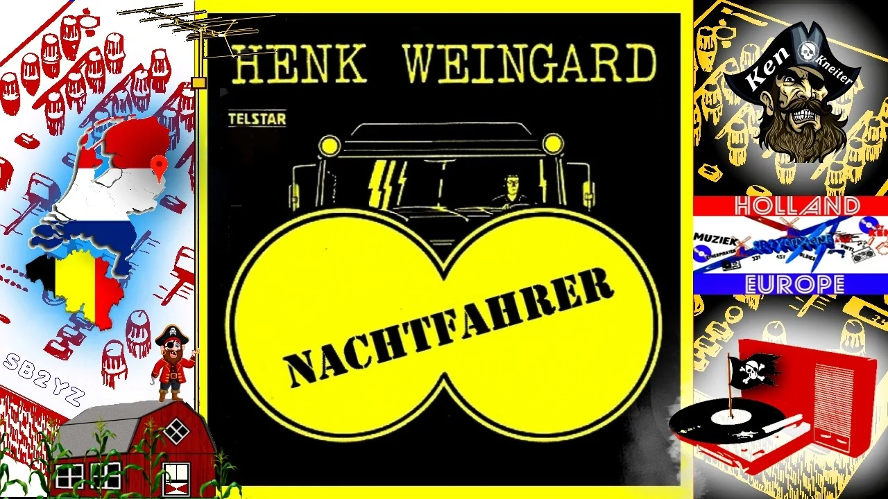

Copyright © Hanz Garage
Professional Edition
Vítejte

Hanz GarageKliknutím na obrázek otevřeš InstagramOnline
Hledání min
Hráč: —
010
000
Levé = odkrytí • pravé = vlaječka / ? • mobil: podrž nebo zapni režim vlaječky • klik na odkryté číslo = otevření okolí
Solitaire
Skóre: 0Nová hraČas: 0
untitled - Paint
Select
For Help, click Help Topics on the Help Menu.
bez názvu – Poznámkový blok
Řádek 1, sloupec 1UTF-8
Kalkulačka
0
M Backspace CE C
Tento počítač
Adresa
Soubory uložené v tomto počítači
Jednotky pevných disků
Skenery a fotoaparáty
5 objektůHanz Garage XP
Správce úloh systému Windows
ÚlohaStav
Využití CPU0 %
Stránkovací soubor0 MB
Historie využití CPU
Historie využití stránkovacího souboru
AdaptérHanz EthernetRychlost spojení:1,0 Gb/s
Využití sítě: 0,0 %Stav: PřipojenoOdesláno: 0 KBPřijato: 0 KB
UživatelIDStavNázev klienta
Procesy: 0Využití CPU: 0 %Využití paměti: 0 MB / 4096 MB
Spustit
▶
Zadejte název programu, složky, dokumentu nebo internetového prostředku.
Tip:
sol, winmine, mspaint, notepad, calc, wmplayer, taskmgr, cmd, iexplore, radio, hanzcenter, screensaver, soundrec, documents, had

Stopped
0:000:00
Nachtfahrer
Vyber motiv
Příkazový řádek
Microsoft Windows XP [Verze 5.1.2600] (C) Copyright 1985-2001 Microsoft Corp.
C:\Documents and Settings\Hanz>
Internet Explorer
Adresa
Internet ExplorerHanz Garage Edition
Vítejte na Internetu
Zadej adresu nahoře nebo použij oblíbené odkazy.
Načítání stránky…
Čekání na odpověď serveru…
HotovoInternet
Ovládací panely
⊞
Adresa
Ovládací panely▼
Vyberte kategorii úkolů
Další možnosti ovládacích panelů
Koš
Přetáhni ikony z plochy přímo na Koš.
NázevPůvodní umístěníDatum odstranění
Koš je prázdný.Přetáhni sem ikonu z plochy.
0 objektů0 vybráno
Zobrazení – vlastnosti
Vlastní obrázek:Není vybrán žádný soubor.
Vlastnosti systému
Hanz Garage XPProfessional EditionService Pack HG
Registrováno na:
HanzPočítač:
Hanz Garage Virtual PCWebový prohlížeč4096 MB RAM
Úplný název počítače:
HANZ-GARAGESprávce zařízeníZobrazení a správa zařízení.
Profily hardwaruKonfigurace hardwaru používaná tímto počítačem.
VýkonVizuální efekty a využití paměti.
Spuštění a zotavení systémuChování systému při spuštění.
Hanz Garage Centrum
Hanz Garage XP Centrum
Rychlé ovládání systému, médií a plochy na jednom místě.
Systém0:00doba relace
Programy0otevřeno
SíťONLINEstav připojení
MédiaNachtfahrerzastaveno
Klávesy: Ctrl+Alt+M = Media Player · Ctrl+Alt+K = Rádio KISS · Ctrl+Alt+H = Centrum · Win/Ctrl+Alt+D = plocha · F5 = aktualizovat plochu
Hanz Garage XP00:00:00
🔍 Hledat
🐶
Co chcete vyhledat?
Archiv
Adresa
C:\Documents and Settings\Hanz\Plocha\Archiv
12 objektůObrázek otevřeš dvojklikem v Malování
Záznam zvuku
00:00.0
Připraveno
Při prvním nahrávání prohlížeč požádá o přístup k mikrofonu.
Záznam zvukuMikrofon
Moje dokumenty
Adresa
C:\Documents and Settings\Hanz\Moje dokumenty
NázevTypZměněno
0 objektůMístní úložiště
Had
Hráč: —Skóre: 0Rekord: 0
HadŠipky nebo WASD
Sbírej body a nenaraz do sebe.Šipky / WASD
Hlasitost
NachtfahrerPřipraveno
Hráč
Pod tímto jménem se ukládá tvoje nejlepší skóre do společného online TOP 10.Připojování k online žebříčku…
TOP 10
Obnovení systému
Obnovit Hanz Garage XP do továrního nastavení?
Smažou se pozice ikon, poznámky, dokumenty, wallpaper, nastavení, lokální rekordy a uložené jméno hráče. Společný online TOP 10 zůstane zachovaný.
Hanz Garage XPSystém je připraven.
Kliknutím nebo klávesou se vrátíš
Systém Windows se vypíná…